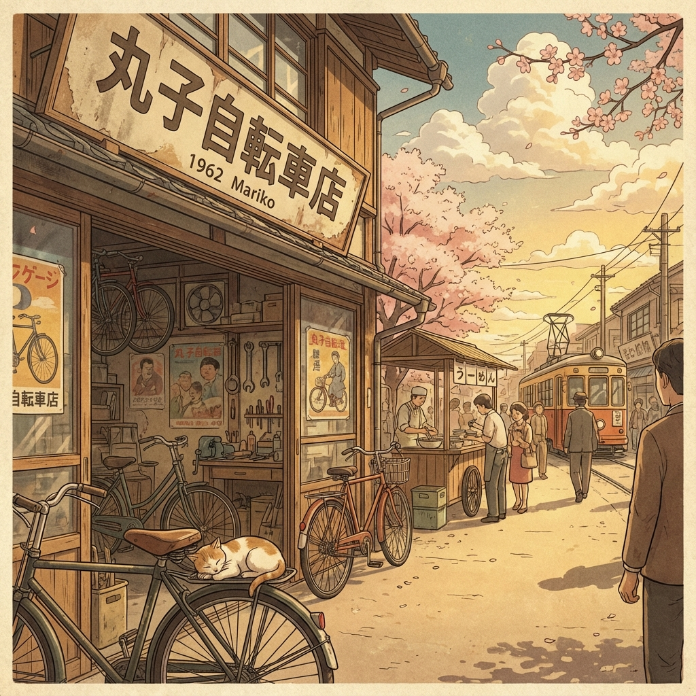
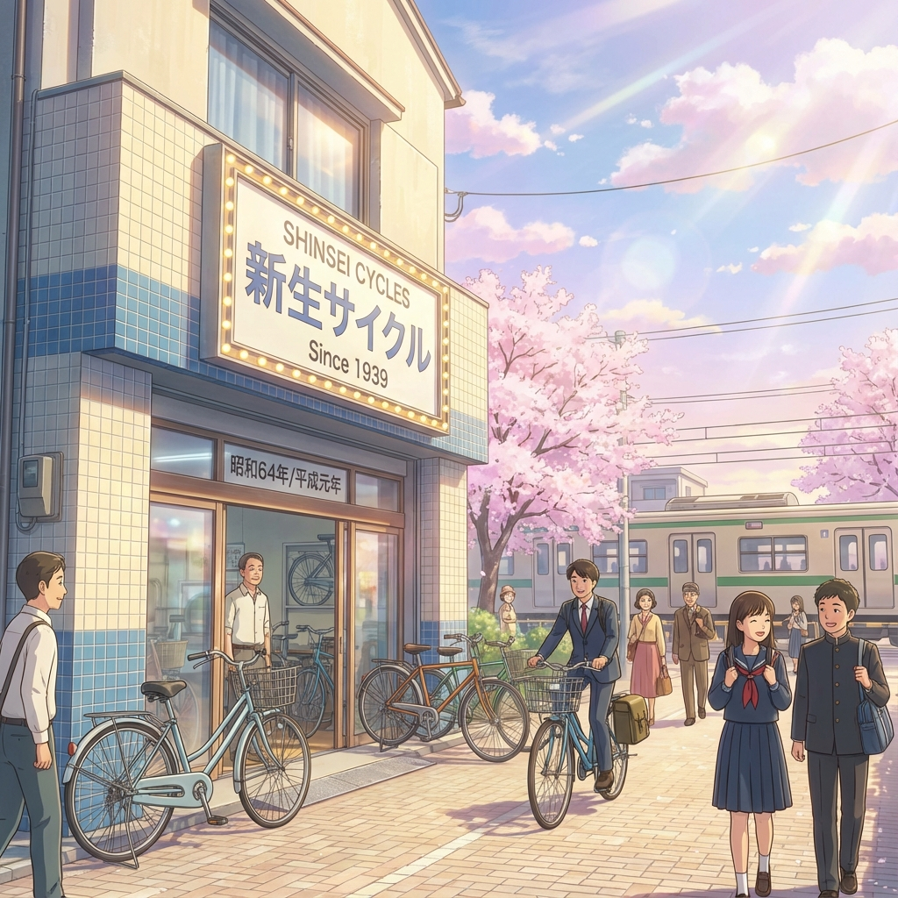
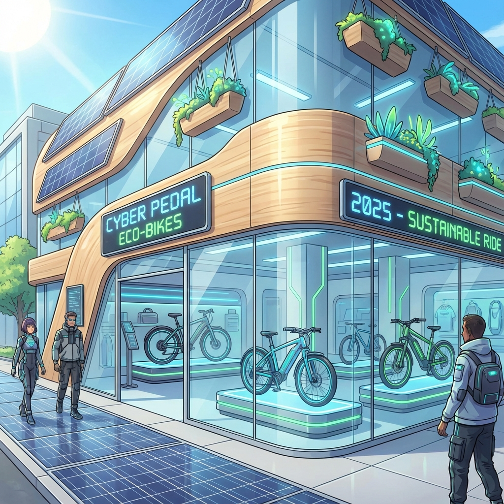
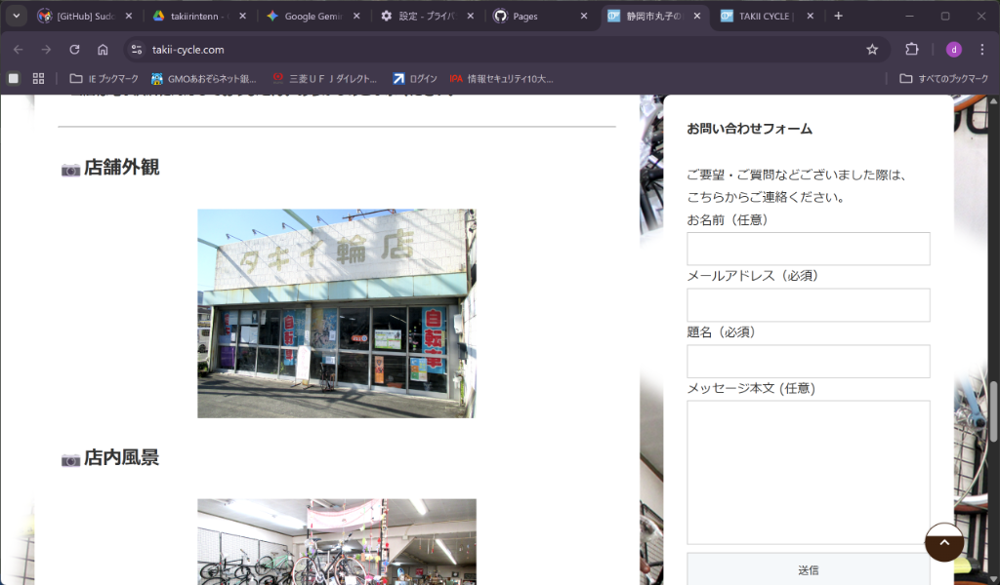
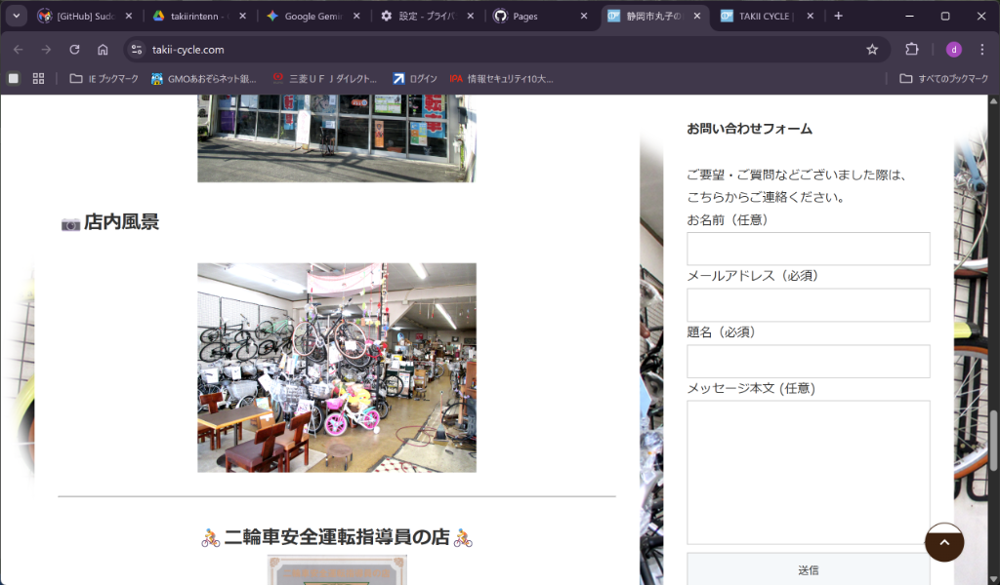

ABOUT
History of Takii Cycle
1919 (大正8年)
創業
「タキイ輪店」として創業。
初代、瀧井鉦吉が自転車修理・販売を開始。
1962 (昭和37年)
移転
現在地（丸子）に移転。
1965 (昭和40年)
ロゴ作成
車輪のイメージに「タキイ」の三文字が組み込まれたロゴが作成される。
1989 (平成元年)
リノベーション
店舗リノベーション。
2026
新時代へ
Webサイトリニューアル。新たな100年へ。
SHOP GALLERY

Exterior (店舗外観)

Interior (店内風景)
OUR BICYCLES
City Cycle
一般的な「ママチャリ」。お買い物や普段乗りに最適です。カゴ、ライト、カギが標準装備。
Commuter
通学・通勤向けモデル。耐久性の高いタイヤや錆びにくいパーツを使用。3年間盗難補償付きも。
Electric Assist
電動アシスト自転車。坂道や重い荷物も楽々。パナソニック、ヤマハ、ブリヂストン各社取扱。
Sports Bike
クロスバイクやマウンテンバイクなど、走る楽しさを追求したモデル。初心者向けも充実。
Utility / Cargo
実用車。荷物を運ぶことに特化した頑丈な自転車。新聞配達や業務利用に。
Kids Bike
お子様向け自転車。初めての1台から、小学生向けまでサイズ豊富に取り揃えています。
※ 比較的安価な Used Bicycles (中古車) や、
お買い得な Sale (セール品) も取り扱っております。